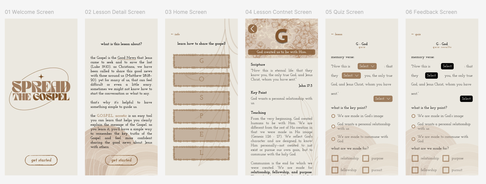

Design

The main flow begins with a welcome page followed by a lesson detail screen that leads to the home screen where users access the six micro-lessons. I focused on the letter G. Each lesson includes four parts: a related Bible verse, a summary key point, a teaching explanation, and a “For the Seeker” section that helps new or exploring believers apply the concept. At the end, users take a short quiz, view their results, and then return to the home screen. A key design decision I made was to keep the layout simple and linear so the flow is intuitive and users can solely focus on learning. I also used headers and clear content hierarchy so users always know what lesson they are in and what information is important. Overall, this was a very helpful experience.
Learning
I learned several new skills, and I feel like my Figma skills have improved significantly. I learned how to use variables, which add a lot of flexibility. Additionally, while I had previously used components and variants from other libraries, I had never created them myself, so I learned a lot about this too.